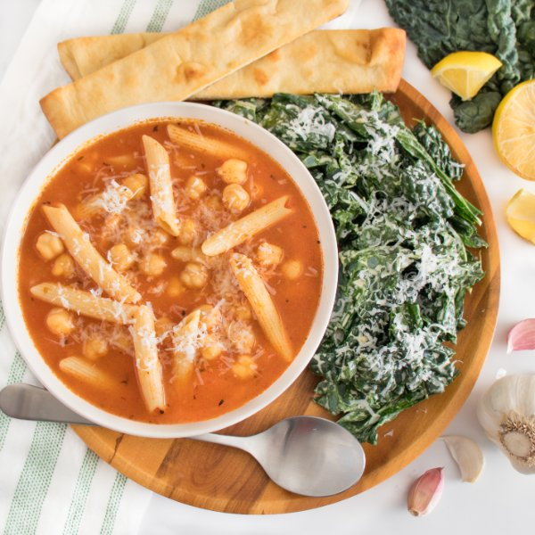

Chickpea-Tomato Noodle Soup with Kale Caesar & Breadsticks

Total Time
35 min
Nutrition (per serving)
690.9 kcalCalories
24.9 gProtein
88.3 gCarbs
28.2 gFat
Full nutrition table
| Calories | 690.9 kcal |
| Total fat | 28.2 g |
| Saturated fat | 8.3 g |
| Trans fat | 0.4 g |
| Cholesterol | 28 mg |
| Sodium | 453.5 mg |
| Carbohydrates | 88.3 g |
| Fiber | 9.3 g |
| Sugars | 8.3 g |
| Protein | 24.9 g |
| Potassium | 968.9 mg |
| Calcium | 160.6 mg |
| Iron | 6.1 mg |
| Vitamin A | 792.1 IU |
| Vitamin C | 62.4 mg |
| Vitamin D | 7.1 IU |
Cookware
Ingredients
- 24 fl ozchicken or vegetable broth
- 2flatbreads or naan
- 1 (15 oz) cangarbanzo beans (chickpeas)
- 2 clovesgarlic
- 1 bunchkale
- 1lemon
- 1 ozParmesan cheese
- 6 ozpenne pasta
- ½ mediumred onion
- 2 (8 oz) canstomato sauce
- black pepper
- Dijon mustard
- extra virgin olive oil
- Italian seasoning
- mayonnaise
- salt
- soy sauce
Steps
- Preheat oven to 425°F.
- Meanwhile, peel and mince onion and garlic. Place half the garlic in a large bowl and set aside for the salad dressing.½ medium red onion
2 cloves garlic - Preheat a large pot over medium-high heat.
- Once the pot is hot, add oil and swirl to coat the bottom. Add onion and remaining garlic to the pot; cook, stirring occasionally, until fragrant, about 1 minute.4 tsp extra virgin olive oil
- Add broth, tomato sauce, pasta, and spices to the pot; stir to combine. Bring to a simmer, reduce heat to medium, cover, and cook until noodles are just tender, about 8 minutes.24 fl oz (3 cups) chicken or vegetable broth
2 (8 oz) cans tomato sauce
6 oz penne pasta
½ tsp Italian seasoning
½ tsp salt
⅛ tsp black pepper - Meanwhile, cut flatbreads into 1½-inch wide strips, place on a baking sheet pan, and drizzle with oil. Place in the oven (it doesn't have to be fully heated) and bake until crispy, 8-10 minutes. Remove from the oven and set aside.2 flatbreads or naan
4 tsp extra virgin olive oil - While the breadsticks are baking, wash, dry, and juice lemon into the bowl with the garlic. Add mayo, Dijon, soy sauce, salt, and pepper; whisk to combine the dressing.1 lemon
2 tbsp mayonnaise
2 tsp Dijon mustard
1 tsp soy sauce
⅛ tsp salt
⅛ tsp black pepper - Wash, dry, and fold kale leaves in half lengthwise and slice off the stems. Chop or tear leaves into bite-sized pieces and transfer to the bowl with the dressing; toss to combine the salad and set aside.1 bunch kale
- Drain and rinse chickpeas. Once the pasta is tender, add chickpeas to the pot and stir to combine. Continue to cook until heated through, 1-2 minutes.1 (15 oz) can garbanzo beans (chickpeas)
- Finely grate cheese.1 oz Parmesan cheese
- Ladle soup into bowls and serve with salad and breadsticks on the side. Top soup and salad with cheese and enjoy!